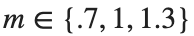
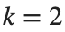
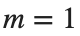
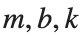

Model Uncertainty와 Robustness
실행 조건
MATLAB · Control System Toolbox
학습 목표
한 모델에서 설계한 제어기를 여러 실제 모델과 지연 조건에 적용해 성능이 나빠지는 지점을 찾습니다.
명목 제어기를 다른 실제 모델에 적용하기
시작 조건

kg, N·s/m,
N·s/m, 
N/m입니다. K와 N은
에서 설계한 값을 고정합니다.진행 방법
- 명목 제어기를 고정하고 세 실제 모델의 Pole과 응답을 비교하세요.
- 각 응답의 최종값과 2% Settling Time을 구하고 가장 느린 조건을 찾으세요.
남길 결과
- 세 응답 곡선과 Pole·Settling Time의 비교표.
A0=[0 1;-2 -3]; B0=[0;1]; C=[1 0]; K=place(A0,B0,[-2 -4]); N=8;
t=linspace(0,6,1201)'; figure; hold on
for m=[.7 1 1.3]
A=[0 1;-2/m -3/m]; B=[0;1/m]; p=eig(A-B*K);
y=lsim(ss(A-B*K,B*N,C,0),ones(size(t)),t);
fprintf('mass %.2f\n',m); disp(p); plot(t,y,'DisplayName',sprintf('m=%g',m));
end
xlabel('Time [s]'); ylabel('Position'); legend; grid on
결과 기록·자가 점검
질량 | |
Pole | |
최종값 | |
Settling Time |
확인할 점
- 실제 모델마다 K를 다시 설계하지 않았는가?
- Settling Time 이후에도 2% 띠 안에 남는지 확인했는가?
질량·마찰·강성을 함께 바꾸기
시작 조건
m∈{.7,1,1.3}, b∈{2,3,4}, k∈{1,2,3}의 27개 조합입니다.  ,
,  은 고정합니다.
은 고정합니다.
진행 방법
- 각 조합의
 고유값에서 실수부의 최댓값을 구하세요. 이 값이 음수인 모델 수와 0 이상인 모델 수를 기록하세요.
고유값에서 실수부의 최댓값을 구하세요. 이 값이 음수인 모델 수와 0 이상인 모델 수를 기록하세요. - 실수부 최댓값이 가장 큰 조합을 찾으세요. 각 조합에서 도 구하고, 가 가장 큰 조합을 따로 찾으세요.
- 선택한 두 조합의

·최대 Pole 실수부·Steady State 오차를 표로 적고 Unit Step을 같은 시간축에 그리세요. - 이번 계산에서 검사한 매개변수 값과 그 사이의 검사하지 않은 값을 구분해 적으세요. 구간 전체의 안정성을 판단하려면 학습자료의 Characteristic Polynomial에서 어느 계수 조건을 살펴봐야 하는지 설명하세요.
남길 결과
- 27개 조건의 안정성 요약과 두 극단 조건의 응답.
records=[];
for m=[.7 1 1.3]
for b=[2 3 4]
for k=[1 2 3]
A=[0 1;-k/m -b/m]; B=[0;1/m]; aa=A-B*K;
maxReal=max(real(eig(aa))); final=-C*(aa\(B*N)); records(end+1,:)=[m b k maxReal abs(1-final)];
end
end
end
[~,near]=max(records(:,4)); [~,large]=max(records(:,5)); disp(records(near,:)); disp(records(large,:));
% TODO: 이 두 모델의 Unit Step을 같은 시간축에 추가하세요.
결과 기록·자가 점검
m,b,k | |
최대 Pole 실수부 | |
Steady-State Error |
확인할 점
- Pole은 A가 아니라
 에서 계산했는가?
에서 계산했는가? - 27개 조합의 Pole 계산 결과와 전체 파라미터 범위에 대한 해석적 근거를 구분했는가?
입력 지연과 포화가 있는 경우
시작 조건
명목 모델에서 dt=.002 s, 6 s 동안 상태를 Euler 적분합니다. 입력 지연은 0,.08,.2 s이고 입력 한계는 ±4입니다.
진행 방법
- 실습용 노트북의 함수로 세 지연의 출력·입력을 그리세요.
- dt를 절반으로 줄여 주요 응답이 비슷한지 확인하세요.
- 선형 Pole의 안정성 판정만으로 지연·포화가 있는 구현을 평가하기 어려운 이유를 설명하세요.
남길 결과
- 출력·입력 곡선, RMS 추종 오차(2 s 이후)·입력 포화 비율(전체 0–6 s 기록)과 적분 간격 비교.
figure; hold on
for delay=[0 .08 .2]
[tt,yy,uu]=delayedInput(delay,.002,A0,B0,K,N); keep=tt>=2;
disp([delay sqrt(mean((1-yy(keep)).^2)) mean(abs(uu)>=4-1e-8)]);
plot(tt,yy,'DisplayName',sprintf('delay=%g',delay));
end
xlabel('Time [s]'); ylabel('Position'); legend; grid on
% TODO: 입력 그래프와 dt=.001 결과를 비교하세요.
function [times,ys,us]=delayedInput(delay,dt,A0,B0,K,N)
times=(0:dt:6)'; x=zeros(2,1); commands=zeros(size(times)); ys=zeros(size(times)); us=zeros(size(times)); lag=round(delay/dt);
for n=1:numel(times)
command=min(max(N-K*x,-4),4); commands(n)=command;
if n>lag, u=commands(n-lag); else, u=0; end
ys(n)=x(1); us(n)=u; x=x+dt*(A0*x+B0*u);
end
end
결과 기록·자가 점검
지연 | |
dt | |
RMS 추종 오차 | |
입력 포화 비율 |
확인할 점
- 지연은 명령 기록에서 과거 입력을 가져오는 방식인가?
- 시간 간격 차이를 모델 불안정과 혼동하지 않았는가?